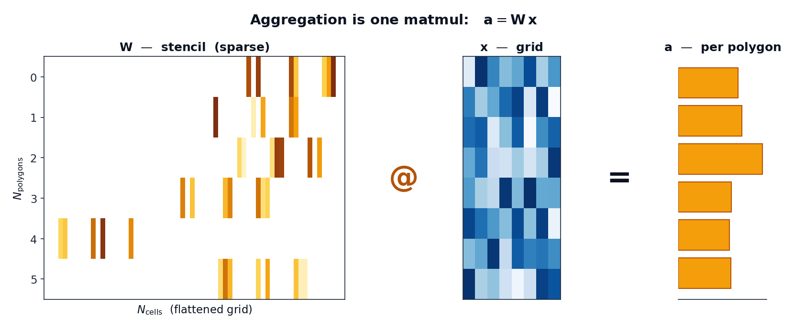

Aggregation as a linear operator¶
Everything geohalo does grows from one observation: zonal aggregation is a linear map from grid cells to polygons.
The map¶
Flatten a gridded field of \(N_\text{cells}\) grid cells into a vector \(\mathbf{x}\). Computing one value per polygon — the area-weighted mean (or sum) of the cells each polygon covers — is a matrix-vector product:
Row \(i\) of \(\mathbf{W}\) holds the weights polygon \(i\) places on each cell: the
exact fractional area of cell ∩ polygon, multiplied by the cell's true area on
the sphere. Cells the polygon never touches are zero — so \(\mathbf{W}\) is very
sparse (each polygon touches a handful of cells out of millions).

Why this framing pays off¶
Because \(\mathbf{W}\) is built from geometry alone, it has nothing to do with the grid values. That single fact drives the whole design:
-
Build once, apply forever. \(\mathbf{W}\) depends only on
(grid, polygons). Compute it one time, cache it, and every subsequent grid — every time step, ensemble member, or band — is just another \(\mathbf{x}\) fed through the same operator. -
Batch for free. Stack \(B\) grid slices into a dense \(\mathbb{R}^{B \times N_\text{cells}}\) matrix and the aggregation of all of them is a single sparse · dense product. A
(member=50, step=40)batch — 2 000 slices — flattens, runs one matmul, and reshapes back. -
Composition is multiplication. Any other linear step folds into the same operator. Refining the grid first? That is a resample matrix \(\mathbf{T}\); the combined operation is \(\mathbf{W}\mathbf{T}\) — still one matmul (see the fused operator). Rolling polygons up a hierarchy? Another sparse matrix \(\mathbf{R}\) (see hierarchical rollups).
flowchart LR
X["grid x<br/>(per slice)"] -->|"resample T"| F["fine grid"]
F -->|"stencil W"| A["per-polygon a"]
A -->|"rollup R"| P["per-parent"]
classDef op fill:#fef3c7,stroke:#b45309,color:#0b1220;The cost lives entirely in the arrows that depend on geometry, and they are all
precomputed. The hot path is one flat @ M.T.
Mean vs sum¶
The raw product \(\mathbf{W}\mathbf{x}\) is an area-weighted sum of weighted cell values. To get the mean, divide each polygon's result by its total overlap area — the row sum of \(\mathbf{W}\):
geohalo precomputes those row sums once (Stencil.row_sums) so how="mean" stays a
division by a cached vector. how="sum" skips the division entirely.
What this isn't¶
A linear operator cannot, by itself, handle data-dependent decisions — and geohalo is honest about that boundary:
- Missing data (NaN). When some cells are invalid, the per-polygon normaliser must be recomputed per slice from the valid mask. That can't be baked into a single fixed matrix, so geohalo falls back to a NaN-aware path that uses a second matmul against the validity mask. Clean data takes the pure single-matmul path.
min/max. These are not linear, so they are out of scope. geohalo doesmeanandsumonly.
Read on: the stencil is the concrete object that holds \(\mathbf{W}\).